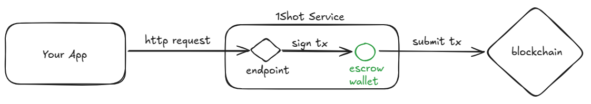
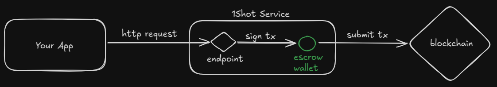
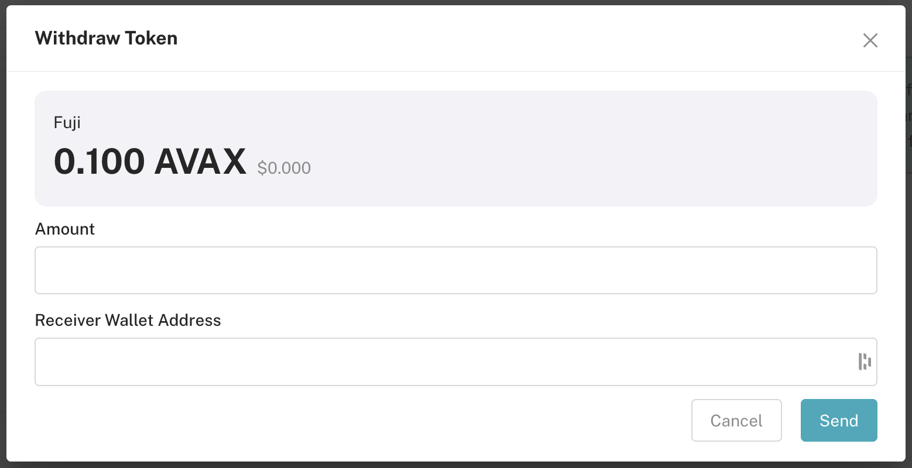
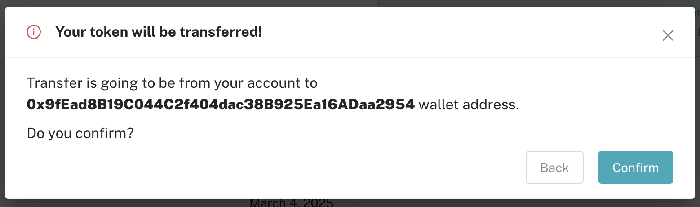

Wallets#
 1Shot API wallets are Ethereum-compatible signing keys managed by 1Shot API to submit transactions on your behalf when you make a REST call to one of your configured contract methods. Each of your wallets can be linked to one or more smart contract methods (but each contract method can only have a single default). The default wallet of a contract method can be overridden when the endpoint is called from the api. In order to submit a transaction from any of your 1Shot API-managed wallets, you must first deposit gas tokens.
1Shot API’s wallet infrastructure keeps your keys secure and encrypted at rest, but it is still good practice to only deposit the amount of gas tokens you need for a given period of time and use delegation to connect self-custodied accounts to 1Shot API’s powerful automation features. When your wallet runs low on funds, 1Shot API will automatically send you an email notification. You can deposit additional gas funds into your wallet at anytime which will trigger a confirmation email when the service detects the deposit.
Creating an Wallet#

To create a wallet, navigate to the Wallets page in the 1Shot API dashboard and click the “Create Wallet” button. You will be prompted to enter a name and description for your new wallet and the target blockchain the wallet will operate on.
Funding Your Wallet#
You must deposit native tokens into your wallet to pay for transactions signed by its key. Only fund your wallet with assets on the target blockchain the wallet is configured for.
For example, if you are setting up a wallet for the Ethereum mainnet, you should only deposit mainnet ETH to pay for gas into the wallet. If you are configuring a wallet for the Polygon network, you should only deposit Polygon gas tokens into the wallet.
Hint
You can deposit ERC-20 tokens, ERC-721 NFTs or other similar assets into a wallet to make it easier to perform airdrops or DeFi trades. Another strategy would be to leave the tokens in a cold (or soft wallet) that you personally control and approve the 1Shot escrow wallet to spend them when needed. The recommended solution is to use 1Shot API’s Delegation feature to connect your self-custodied wallet to the 1Shot API service, allowing you to use your own keys while still benefiting from the automation features.
Withdrawing funds#
You can withdraw funds from your wallet at any time by clicking the “Withdraw” button on the wallet’s detail page. Enter the amount of gas (native) tokens you want to withdraw and click “Send”. You’ll be prompted to confirm the withdrawal details before the transaction is submitted.
Account Delegation#
1Shot API allows you to delegate your self-custodied wallet to the 1Shot API service, enabling you to use your own keys while still benefiting from 1Shot API’s extensive automation features. This is particularly useful for users who want to maintain control over their private keys while leveraging the convenience of 1Shot API’s transaction management. Delegation is accomplished via MetaMask’s Delegation Toolkit; when you sign a delegation, you can specify time bounds as well as which contract methods you want to allow the 1Shot API service to execute on your behalf, cryptographically ensuring that only the specified methods can be called.
Upgrade to MetaMask’s 7702 Stateless Delegator#
With delegation, you can benefit from the full power of 1Shot API’s automation integrations with n8n, IFTTT, and Make to fully automate onchain workflows while retaining complete control over your keys and assets. Before you can create a delegation, you must first upgrade your EOA to use MetaMask’s 7702StatelessDelegator. There are two ways to do this: in a script or through the MetaMask browser extension.

Note
While you can easily upgrade an account to the 7702StatelessDelegator in the MetaMask extension, MetaMask currently disallows EIP-712 delegation signatures in their browser and mobile wallets. You will need to import your account into another browser wallet like OKX Wallet in order to sign and store delegations in the 1Shot API portal or sign a delegation in a script.
Create a Delegation#
Once you have submitted a 7702 transaction mounting the 7702StatelessDelegator wallet to your EOA, navigate to the Wallets page and click on an existing wallet or create a new one. Delegations are linked to a specific 1Shot API wallet, when you delegate to a 1Shot API Wallet, the delegation payload will be stored by 1Shot API so that it can be used on-demand to relay transactions on your behalf.
You can create a delegation with a script using the MetaMask Delegation Toolkit using the caveat building set appropriate restrictions for your use case (like time and spend limits or specific contract methods). Once the delegation has been singed by your EOA, store the delegation in 1Shot API by making a PUT request to the /wallets/{walletId}/delegation endpoint with the delegation payload in the request body (see the OpenAPI spec). This method is usefull for implementing user-friendly onboarding flows for users in your dApp.
Alternatively, if you are using 1Shot API to create and run your own automation workflows in n8n, Make, or IFTTT, you can create a delegation directly on the Wallets details page. Connect your wallet to the Wallets details page then click the Add Delegation button. You’ll have the option to set a start and end date for the delegation as well as restrict the delegation to specific contract methods that you have imported into your Smart Conctracts library. Once you have chosen your desired rules, click Create Delegation which will open your browser wallet to sign the EIP-712 delegation payload. Once signed, the delegation will be stored in 1Shot API and can be used with the /methods/{contractMethodId>/executeAsDelegator REST endpoint to relay transactions on your behalf.